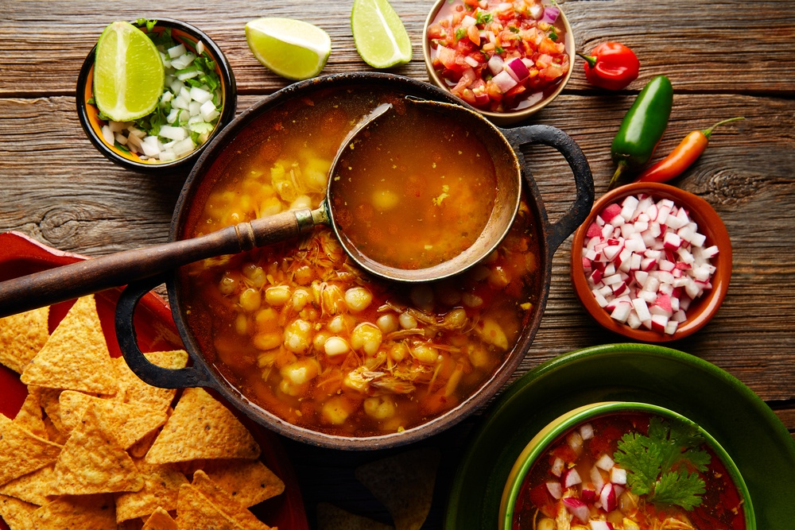

Algunos platillos típicos de México
El mole

La cocina es una recompensa para el paladar y en México si estás celebrando algo probablemente el plato principal en la mesa será un buen Mole. En nuestro país podrás encontrar una gran variedad de ellos, algunos llegan a ser tan sofisticados que pueden contener un sinfín de ingredientes de diferentes partes del mundo que al mezclarlos correctamente toman una identidad indudablemente mexicana. Es una salsa que está viva y de verdad al ponerlo en tu boca literalmente se vuelve una gran fiesta para el paladar.
El Pozole
Para hablar de este delicioso guiso hay que remontarnos un poco en la historia ya que varios Frailes comenzaron a documentar su existencia. Fray Bernardino de Sahagún, escribió sobre el singular platillo en su monumental obra: Historia general de las cosas de la Nueva España. Podemos afirmar que lo escribió con repugnancia, ya que los antiguos mexicas preparaban el pozole con carne de los cautivos sacrificados en algunas fiestas, principalmente la dedicada a Nuestro Señor el Desollado, Xipe Totec. Dicho festejo llevaba el nombre de Tlacaxipehualiztli.
Hoy en día dicho platillo tiene una preparación diferente y más civilizada ya que en nuestros días se hace con carne de cerdo. En la actualidad el pozole ha sufrido cambios y diferencias asociadas con la región donde se prepara y consume. En el estado de Guerrero se prepara el blanco y el verde, mientras que en la Ciudad de México, Sinaloa, Nayarit y Jalisco se consume la variante roja.